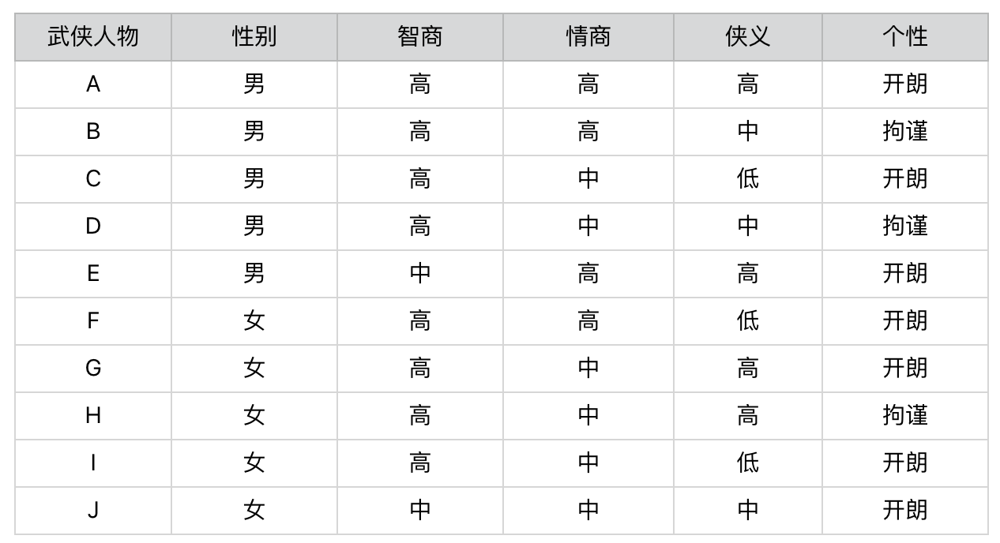
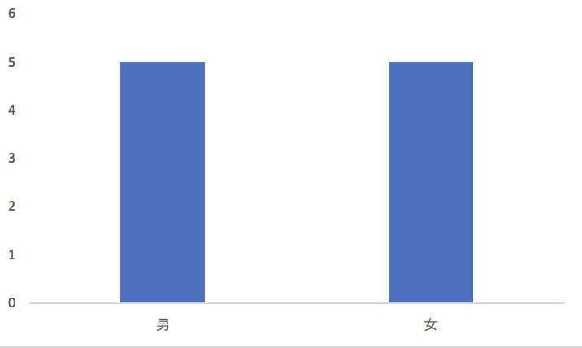
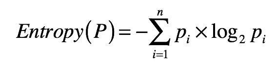
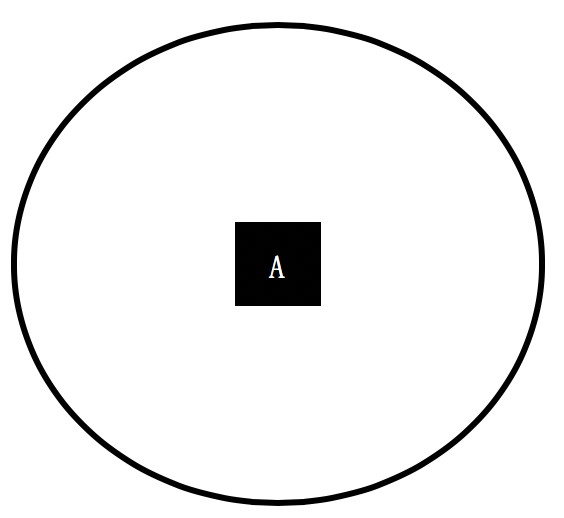
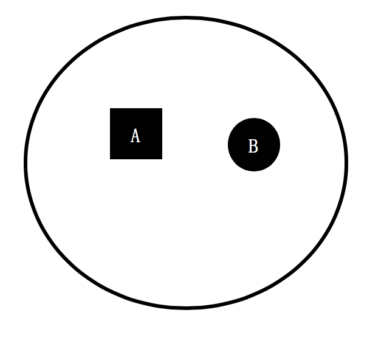
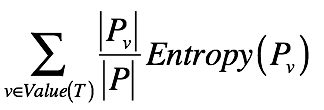
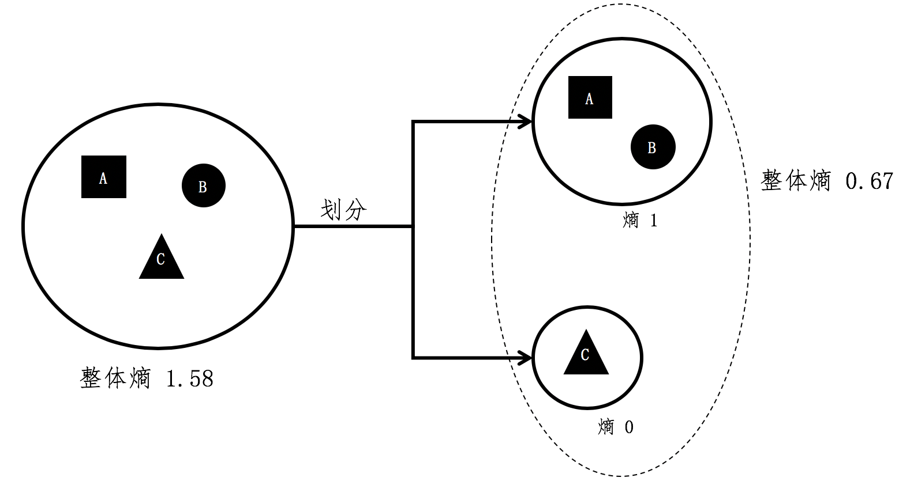
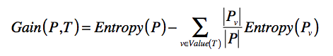

- 01 二进制：不了解计算机的源头，你学什么编程.md.html
- 02 余数：原来取余操作本身就是个哈希函数.md.html
- 03 迭代法：不用编程语言的自带函数，你会如何计算平方根？.md.html
- 04 数学归纳法：如何用数学归纳提升代码的运行效率？.md.html
- 05 递归（上）：泛化数学归纳，如何将复杂问题简单化？.md.html
- 06 递归（下）：分而治之，从归并排序到MapReduce.md.html
- 07 排列：如何让计算机学会“田忌赛马”？.md.html
- 08 组合：如何让计算机安排世界杯的赛程？.md.html
- 09 动态规划（上）：如何实现基于编辑距离的查询推荐？.md.html
- 10 动态规划（下）：如何求得状态转移方程并进行编程实现？.md.html
- 11 树的深度优先搜索（上）：如何才能高效率地查字典？.md.html
- 12 树的深度优先搜索（下）：如何才能高效率地查字典？.md.html
- 13 树的广度优先搜索（上）：人际关系的六度理论是真的吗？.md.html
- 14 树的广度优先搜索（下）：为什么双向广度优先搜索的效率更高？.md.html
- 15 从树到图：如何让计算机学会看地图？.md.html
- 16 时间和空间复杂度（上）：优化性能是否只是“纸上谈兵”？.md.html
- 17 时间和空间复杂度（下）：如何使用六个法则进行复杂度分析？.md.html
- 18 总结课：数据结构、编程语句和基础算法体现了哪些数学思想？.md.html
- 19 概率和统计：编程为什么需要概率和统计？.md.html
- 20 概率基础（上）：一篇文章帮你理解随机变量、概率分布和期望值.md.html
- 21 概率基础（下）：联合概率、条件概率和贝叶斯法则，这些概率公式究竟能做什么？.md.html
- 22 朴素贝叶斯：如何让计算机学会自动分类？.md.html
- 23 文本分类：如何区分特定类型的新闻？.md.html
- 24 语言模型：如何使用链式法则和马尔科夫假设简化概率模型？.md.html
- 25 马尔科夫模型：从PageRank到语音识别，背后是什么模型在支撑？.md.html
- 26 信息熵：如何通过几个问题，测出你对应的武侠人物？.md.html
- 27 决策树：信息增益、增益比率和基尼指数的运用.md.html
- 28 熵、信息增益和卡方：如何寻找关键特征？.md.html
- 29 归一化和标准化：各种特征如何综合才是最合理的？.md.html
- 30 统计意义（上）：如何通过显著性检验，判断你的A_B测试结果是不是巧合？.md.html
- 31 统计意义（下）：如何通过显著性检验，判断你的A_B测试结果是不是巧合？.md.html
- 32 概率统计篇答疑和总结：为什么会有欠拟合和过拟合？.md.html
- 33 线性代数：线性代数到底都讲了些什么？.md.html
- 34 向量空间模型：如何让计算机理解现实事物之间的关系？.md.html
- 35 文本检索：如何让计算机处理自然语言？.md.html
- 36 文本聚类：如何过滤冗余的新闻？.md.html
- 37 矩阵（上）：如何使用矩阵操作进行PageRank计算？.md.html
- 38 矩阵（下）：如何使用矩阵操作进行协同过滤推荐？.md.html
- 39 线性回归（上）：如何使用高斯消元求解线性方程组？.md.html
- 40 线性回归（中）：如何使用最小二乘法进行直线拟合？.md.html
- 41 线性回归（下）：如何使用最小二乘法进行效果验证？.md.html
- 42 PCA主成分分析（上）：如何利用协方差矩阵来降维？.md.html
- 43 PCA主成分分析（下）：为什么要计算协方差矩阵的特征值和特征向量？.md.html
- 44 奇异值分解：如何挖掘潜在的语义关系？.md.html
- 45 线性代数篇答疑和总结：矩阵乘法的几何意义是什么？.md.html
- 46 缓存系统：如何通过哈希表和队列实现高效访问？.md.html
- 47 搜索引擎（上）：如何通过倒排索引和向量空间模型，打造一个简单的搜索引擎？.md.html
- 48 搜索引擎（下）：如何通过查询的分类，让电商平台的搜索结果更相关？.md.html
- 49 推荐系统（上）：如何实现基于相似度的协同过滤？.md.html
- 50 推荐系统（下）：如何通过SVD分析用户和物品的矩阵？.md.html
- 51 综合应用篇答疑和总结：如何进行个性化用户画像的设计？.md.html
- 导读：程序员应该怎么学数学？.md.html
- 开篇词 作为程序员，为什么你应该学好数学？.md.html
- 数学专栏课外加餐（一） 我们为什么需要反码和补码？.md.html
- 数学专栏课外加餐（三）：程序员需要读哪些数学书？.md.html
- 数学专栏课外加餐（二） 位操作的三个应用实例.md.html
- 结束语 从数学到编程，本身就是一个很长的链条.md.html
- 捐赠
26 信息熵：如何通过几个问题，测出你对应的武侠人物？
你好，我是黄申。
之前和你聊了概率在朴素贝叶斯分类算法中的应用。其实，概率在很多像信息论这样的应用数学领域都有广泛的应用。信息论最初就是运用概率和统计的方法，来研究信息传递的。最近几十年，人们逐步开始使用信息论的概念和思想，来描述机器学习领域中的概率分布，并衡量概率分布之间的相似性。随之而来的是，人们发明了不少相关的机器学习算法。所以接下来的几节，我来介绍一些基于信息论知识的内容。
信息论的概念比较枯燥，为了让你更轻松地学习，让我从一个生动的案例开始。最近我在朋友圈看到一个小游戏，叫“测一测你是金庸笔下的哪个人物？”。玩这个游戏的步骤是，先做几道题，然后根据你的答案，生成对应的结果。下面是我几位朋友答题之后得到的结果。
这种测试挺好玩的，而且好像有很多类似的，比如测星座啊、测运势啊等等。那你知道这种心理或者性格测试的题目是怎么设计的吗？
通常，这种心理测试会有一个题库，包含了许多小题目，也就是从不同的方面，来测试人的性格。不过，针对特定的测试目标，我们可能没必要让被测者回答所有的问题。那么，问卷设计者应该如何选择合适的题目，才能在读者回答尽量少的问题的同时，相对准确地测出自己是什么“性格”呢？这里，我们就需要引入基于概率分布的信息熵的概念，来解决这个问题。
什么是信息熵？
我还是拿刚刚那个“测测你是哪个武侠人物”的小游戏举例子。我设计了一个测试题，你可以看看下面这个图表。这个表里一共有10个人物。每个人物都有性别、智商、情商、侠义和个性共5个属性。相应地，我会设计5道题目分别测试这5个属性所占的比例。最后，将测出的5个属性和答案中的武侠人物对照，就可以找到最接近的答案，也就是被测者对应的武侠人物。

这个过程非常简单，你应该很容易就能理解。在这个设计过程中，起决定性作用的环节其实就是，如何设计这5道题目。比如，题目的先后顺序会不会直接影响要回答问题的数量？每个问题在人物划分上，是否有着不同的区分能力？这些都是信息熵要解决的问题。
我们先来看，这里的区分能力指的是什么呢？每一个问题都会将被测试者划分为不同的人物分组。如果某个问题将属于不同人物分组的被测者，尽可能地划分到了相应的分组，那么我们认为这个问题的区分能力较强。相反，如果某个问题无法将属于不同人物分组的被测者划分开来，那么我们认为这个问题的区分能力较弱。为了帮你进一步理解，我们先来比较一下“性别”和“智商”这两个属性。

首先，性别属性将武侠人物平均地划分为一半一半，也就是说“男”和“女”出现的先验概率是各50%。如果我们假设被测试的人群，其男女性别的概率分布也是50%和50%，那么关于性别的测试题，就能将被测者的群体大致等分。
我们再来看智商属性。我们也将武侠人物划分为2个小集合，不过“智商高”的先验概率是80%，而“智商中等”的先验概率只有20%。同样，我们假设被测试的人群，其智商的概率分布也是类似地，那么经过关于智商的测试题之后，仍然有80%左右的不同人物还是属于同一个集合，并没有被区分开来。因此，我们可以认为关于“智商”的测试题，在对人物进行分组这个问题上，其能力要弱于“性别”的测试题。
上述这些是不是都很简单？这些都是我们按照感觉，或者说经验来划分的。现在，我们试着用两个科学的度量指标，信息熵（Entropy）和信息增益（Information Gain），来衡量每道题目的区分能力。
首先，怎么来理解信息熵呢？信息熵，我们通常简称为熵，其实就是用来刻画给定集合的纯净度的一个指标。你可能要问了，那纯净度是啥呢？我举个例子给你解释一下。比如说，一个集合里的元素全部是属于同一个分组，这个时候就表示最纯净，我们就说熵为0；如果这个集合里的元素是来自不同的分组，那么熵是大于0的值。其具体的计算公式如下：

其中，\(n\)表示集合中分组的数量，\(p\_{i}\)表示属于第\(i\)个分组的元素在集合中出现的概率。
你可能要问了，这个公式是怎么来的呢？想要解释这个，我们还要从信息量说起。熵的公式是用来计算某个随机变量的信息量之期望，而信息量是信息论中的一个度量，简单来说就是，当我们观察到某个随机变量的具体值时，接收到了多少信息。而我们接收到的信息量跟发生事件的概率有关。事情发生的概率越大，产生的信息量越小；事情发生的概率越小，产生的信息量越大。
因此，我们想要设计一个能够描述信息量的函数，就要同时考虑到下面这三个特点：
信息量应该为正数；
一个事件的信息量和它发生的概率成反比；
\(H(x)\)与\(P(x)\)的对数有关。其中\(H(x)\)表示\(x\)的信息量，\(P(x)\)表示\(x\)出现的概率。假设有两个不相关的事件\(x\)和\(y\)，我们观察到这两个事件同时发生时获得的信息量，应该等于这两个事件各自发生时获得的信息量之和，用公式表达出来就是\(H(x,y)=H(x)+H(y)\)。之前我们说过，如果\(x，y\)是两个不相关的事件，那么就有\(P(x,y)=P(x)\*P(y)\)。
依照上述这三点，我们可以设计出信息量公式：\(H(x)=-log(P(x), 2)\)。函数log的使用是体现了\(H(x)\)和\(P(x)\)的对数关系（我们可以使用其他大于1的数字作为对数的底，我这里使用2只是约定俗成。而最开始的负号是为了保证信息量为正）。这个公式可以量化随机变量某种取值时，所产生的信息量。最后，加上计算随机变量不同可能性所产生的信息量之期望，我们就得到了熵的公式。
从集合和分组的角度来说，如果一个集合里的元素趋向于落在同一分组里，那么告诉你某个元素属于哪个分组的信息量就越小，整个集合的熵也越小，换句话说，整个集合就越“纯净”。相反，如果一个集合里的元素趋向于分散在不同分组里，那么告诉你某个元素属于哪个分组的信息量就越大，整个集合的熵也越大，换句话说，整个集合就越“混乱”。
为了帮你理解运用，这里我再举几个例子帮助你更好地消化这个公式。我们首先来看一个集合，它只包含了来自A组的元素。

那么集合中分组的数量\(n\)为1，A分组的元素在集合中出现的概率为100%，所以这个集合的熵为-100%*log(100%, 2) = 0。
我们再来看另一个集合，它只包含了来自A组和B组的元素，其中A、B两组元素数量一样多，各占一半。

那么集合中分组的数量\(n\)为2，A和B分组的元素在集合中出现的概率各为50%，所以这个集合的熵为2*(-50%*log(50%, 2)) = 1，高于刚才那个集合。
从上述两个集合的对比可以看出，一个集合中所包含的分组越多、元素在这些分组里分布得越均匀，熵值也越大。而熵值表示了纯净的程度，或者从相反的角度来说，是混乱的程度。
好了，你已经知道单个集合的熵是如何计算的了。那么，如果将一个集合划分成多个更小的集合之后，又该如何根据这些小集合，来计算整体的熵呢？之前我们提到了信息量和熵具有加和的性质，所以对于包含多个集合的更大集合，它的信息量期望值是可以通过每个小集合的信息量期望值来推算的。具体来说，我们可以使用如下公式：

其中，\(T\)表示一种划分，\(P\_{v}\)表示划分后其中某个小集合，\(Entropy(P\_{v})\)表示某个小集合的熵，而\(\\frac{|Pv|} {|P|}\) 表示某个小集合出现的概率。所以这个公式其实就表示，对于多个小集合而言，其整体的熵等于各个小集合之熵的加权平均。而每个小集合的权重是其在整体中出现的概率。
我用个例子进一步解释这个公式。假设A、B、C三个集合是一个大的整体，我们现在将C组的元素和A、B组分开。

根据之前单个集合的熵计算，A和B组元素所组成的小集合，它的熵是1。而C组没有和其他组混合，所形成的小集合其熵为0。在计算前两个小集合的整体熵时，A组和B组形成的集合出现的概率为\(\\frac{2}{3}\)，而C组形成的集合出现概率为\(\\frac{1}{3}\)，所有整体熵\(=\\frac{2}{3} \* 1 + \\frac{1}{3} \* 0 = 0.67\)。
什么是信息增益？
如果我们将划分前后的整体熵做个对比，你会发现划分后的整体熵要小于划分之前的整体熵。这是因为每次划分，都可能将不同分组的元素区分开来，降低划分后每个小集合的混乱程度，也就是降低它们的熵。我们将划分后整体熵的下降，称为信息增益（Information Gain）。如果划分后整体熵下降得越多，信息增益就越大。我列出公式以便你理解。

其中T表示当前选择的特征，\(Entropy§\)表示选择特征\(T\)之前的熵，\(Entropy(P\_{v})\)表示特征\(T\)取值为\(v\)分组的熵。减号后面的部分表示选择T做决策之后，各种取值加权平均后整体的熵。
\(Gain(P,T)\)表示两个熵值之差，越大表示信息增益越多，应该选择这维特征\(T\)。
我们把这个概念放到咱们的小游戏里就是，如果一个测试问题能够将来自不同分组的人物尽量的分开，也就是该划分对应的信息增益越高，那么我们就认为其区分能力越高，提供的信息含量也越多。好，说到这里，让我们从游戏的最开始出发，比较一下有关性别和智商的两个测试题。
在提出任何问题之前，我们无法知道被测者属于哪位武侠人物，因此所有被测者属于同一个集合。假设被测者的概率分布和这10位武侠人物的先验概率分布相同，那么被测者集合的熵为10*(-1 * 0.1 * log(0.1, 2))=3.32。
通过性别的测试问题对人物进行划分后，我们得到了两个更小的集合，每个小集合都包含5种不同的人物分组，因此每个小集合的熵是(-1 * 5 * 0.2 * log(0.2, 2)) = 2.32，两个小集合的整体熵是0.5 * 2.32 + 0.5 * 2.32 = 2.32。因此使用性别的测试题后，信息增益是3.32 - 2.32 = 1。
而通过智商的测试问题对人物分组后，我们也得到了两个小集合，一个包含了8种人物，另一个包含了2种人物。包含8种人物的小集合其熵是(-1* 8 * 0.125 * log(0.125, 2)) = 3，包含2种人物的小集合其熵是(-1* 2 * 0.5 * log(0.5, 2)) = 1。两个小集合的整体熵是0.8 * 3 + 0.2 * 1 = 2.6。因此使用智商的测试题后，信息增益是3.32 - 2.6 = 0.72，低于基于性别的测试。所以，我们可以得出结论，有关性别的测试题比有关智商的测试题更具有区分能力。
信息增益和信息熵是紧密相关的。如果说信息熵衡量了某个状态下，每个分组的纯净程度或者说混乱程度，那么信息增益就是比较了不同状态下，信息熵的差异程度。
总结
这一讲中，我们从一个有趣的人物性格测试开始，探讨了如何高效率地进行问卷调查。其中主要包含了两个要点：信息熵和信息增益。熵的计算是基于集合内各组元素分布的概率来进行的。而信息增益是集合划分前后整体熵的差值。对某个集合进行划分，都会将其中元素细分到更小的集合，而每个细分的集合纯净度就会提高，整体熵就会下降，其中下降的部分就是信息增益。
了解信息熵和信息增益的定义之后，我们可以用它们来安排测试问题的先后顺序。其核心的思路是，利用信息增益找出区分力最强的测试题。如果一道测试题可以将来自不同分组的元素分隔开来，那么就说它是有区分力的。如果分隔后，每个细分的集合其熵越趋近于0，那么我们说这个测试题的区分力越强。
思考题
假设一个集合包含了64个元素，而每个元素的分类都互不相同，那么这个集合的信息熵是多少？仔细观察一下你所计算的结果，和二进制有没有什么联系？
欢迎留言和我分享，也欢迎你在留言区写下今天的学习笔记。你可以点击“请朋友读”，把今天的内容分享给你的好友，和他一起精进。
© 2019 - 2023 Liangliang Lee. Powered by gin and hexo-theme-book.